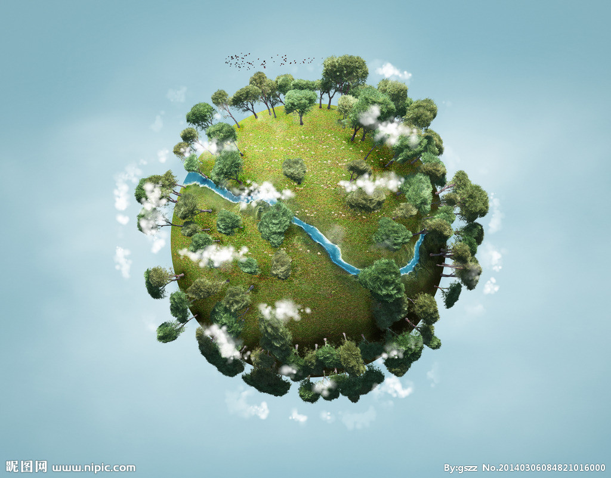

付一支镜花，收一轮水月,飞舞在一帘幽梦中，当梦醒时分，跌落在雨中，恭腰向梦投降。---题记
夜色中的雨丝，穿透灵魂里的寂寞，隔岸，把幽幽相思托风，送到你的胸前。昨夜一场细雨，叩开寂静的心扉，像一朵开在雨里的玫瑰，欲滴艳丽，恰似你明媚的笑容。今夜，雨声又坠落天边，步履婀娜轻盈，如温暖盛开着的微笑，来到我的怀间。拂衣轻叹，翩跹，空灵的夜色，远方落在我的心田。掌心汹涌着光阴的碎片，在霓虹灯下延伸了万种柔情。斑驳的想念，却不曾有半点罅隙，只因深情是亘古的，永远不会倦怠。
一份不染纤尘的爱恋，在银色的雨中，愈加显得纯洁，出脱超然。爱，如此珍贵，灿烂，爱，如此暖心，喜欢。一世的痴念，在指尖盘旋，雨忧愁，连这窗台都镶嵌了愁感。百转千回载不动思念的帆，注定了这宿命里的此岸和彼岸。
在这个落花的雨季去寻你，千山万水，任由想念的泪决堤，也要让爱恋锁住相思的重门。“天涯地角有穷时，只有相思无尽处。”薄凉的秋，看长长的雁影南归去。写下思绪万缕，徜徉在云水间，踏遍江河，只为遁寻你的足迹。等你，念你，寻你，是生命里留下的最美传奇。再回首，风景已经远去，枫叶染红了秋语，火一样的燃尽相思意，山远天高烟水寒，相思枫叶丹。有一种爱，走过四季，穿越时空，不言不语，默默守护你。云烟深处，缠绵相依，寻遍花开花落的足迹，等你，寻你，念你。是画卷里勾勒出的旖旎，是柔情在爱的笺底，埋下的伏笔。长相依，念相依，一程山长，一程水远，一程梦里于你相忆，浮华尘世，如烟消逝。往事无需再次提起，今生守你，等你，念你。纵使吟尽离愁别绪，也绝不负你。